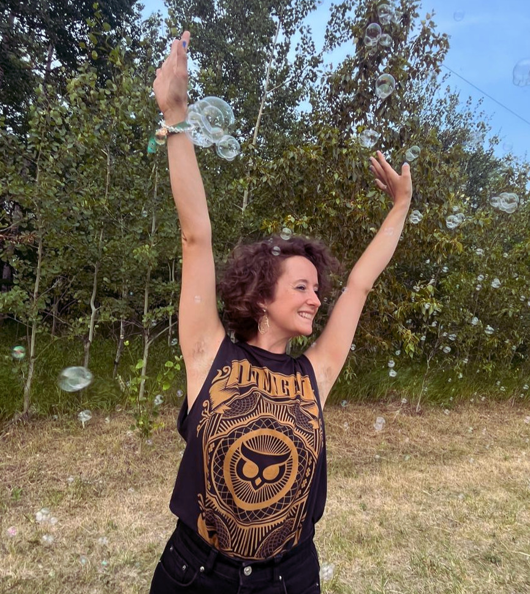
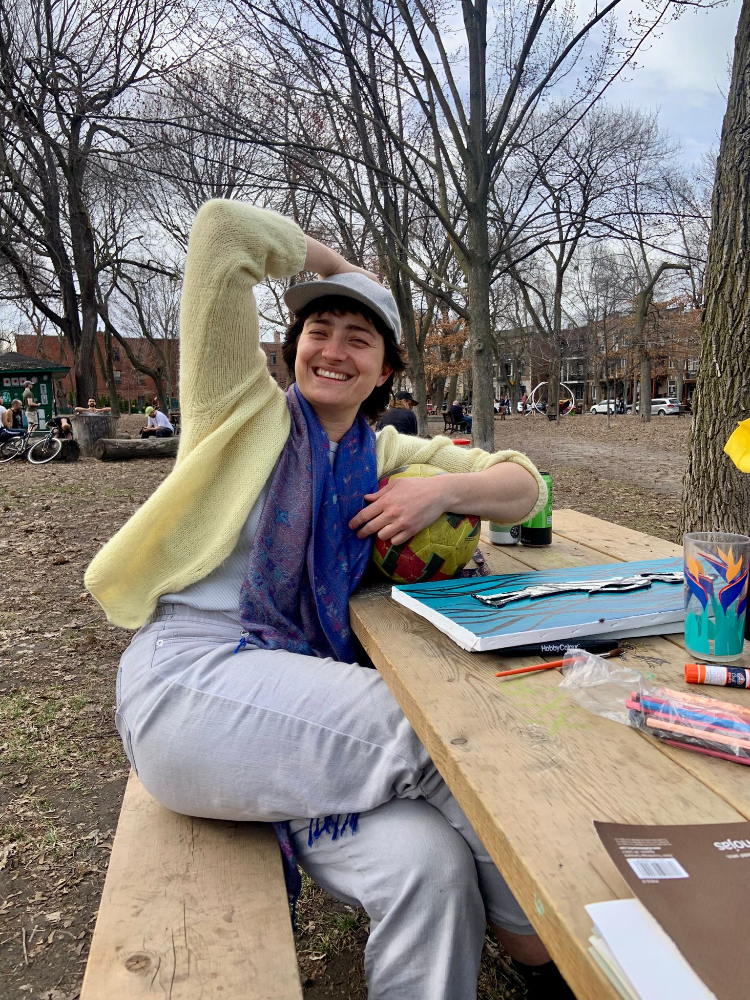
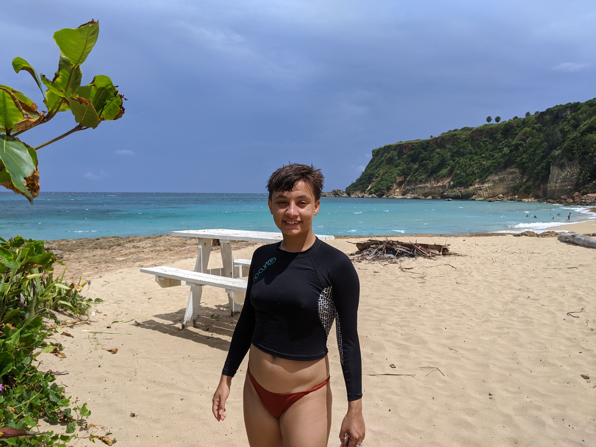
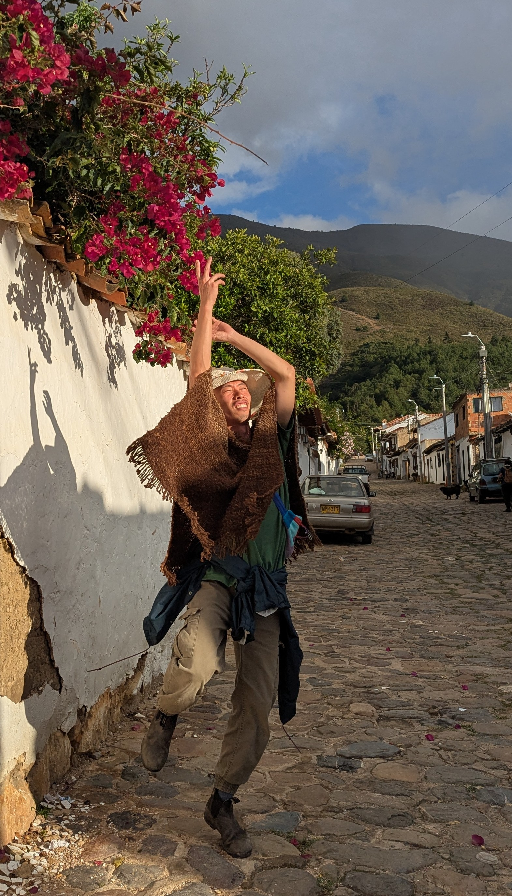
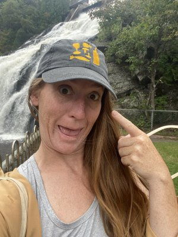

The gathering is organized and facilitated by a small, committed team rooted in CI practice.
Le regroupement est organisé et facilité par une petite équipe engagée, ancrée dans la pratique du CI.

Victoria Emilie Hill (she/they) is a queer creator, mover, facilitator, writer, event producer, and actor originally based in Treaty 1 Territory, but now living in Montreal (Tiohtià:ke). She is passionate about work that focuses on movement and the body as a place we hold and tell stories. Victoria holds a BA Honours in Theatre (Acting) with a double major in Politics. They have trained in Viewpoints, Grotowski, Suzuki, and CI and have worked as a performer, dancer, facilitator, and writer. In recent years, Victoria participated in a Live Art Building residency in NY at Arts Letters & Numbers, is studying somatic psychotherapy, and has been practicing CI in Vancouver, Winnipeg, Montreal, Massachusetts, and Lasqueti Island. Victoria seeks to find the connections between art-making through collaborative creation processes, and living in alignment with our sweet mama earth. This means working towards positive meaningful connections with ourselves, other creatures, and the planet. Sidequest: practicing saying what is true, even if it changes the shape of things.
Victoria Emilie Hill (she/they) est une créatrice, danseuse, facilitatrice, écrivaine, productrice et actrice queer, originaire du Territoire du Traité 1, maintenant basée à Montréal (Tiohtià:ke). Elle est passionnée par le travail qui place le mouvement et le corps au cœur du récit. Victoria a un BA avec mention en Théâtre (jeu) avec une double majeure en Science politique. Elle a pratiqué les Viewpoints, Grotowski, Suzuki et le CI, et a travaillé comme performeuse, danseuse, facilitatrice et écrivaine. Ces dernières années, Victoria a participé à une résidence au Live Art Building à New York chez Arts Letters & Numbers, étudie la psychothérapie somatique, et a pratiqué le CI à Vancouver, Winnipeg, Montréal, au Massachusetts et à Lasqueti Island. Victoria cherche les connexions entre la création artistique à travers des processus collaboratifs, et le fait de vivre en harmonie avec notre douce mère terre. Quête secondaire : pratiquer de dire ce qui est vrai, même si ça change la forme des choses.

Sophie Bijjani (she/her) is an artist and facilitator returning to her homeland of Quebec after ten years of nomadic living, now based in Montreal (Tiohtià:ke). It was in France that the practices defining her work today found her: circlesong, contact improvisation, alternative communities. Each one asking how humans can focus their energy and attention toward something co-created and expansive. Trained in jazz voice and body music, she returns to Montreal's CI community with an appetite for detail, a long inquiry into transparent and nonviolent communication, and a childhood dream: becoming an agile 170 lbs flying cheerleader. She is drawn to rivers, especially those that can be swum in (even better if drinkable), and to practices that bring the body into aliveness, from cold plunges to shared voice. Sidequest: with conviction and curiosity, to understand how to be happy without needing to be right.
Sophie Bijjani (she/her) est une artiste et facilitatrice qui retourne dans sa terre natale du Québec après dix ans de vie nomade, maintenant basée à Montréal (Tiohtià:ke). C'est en France que les pratiques qui définissent son travail aujourd'hui l'ont trouvée : le chant en cercle, le contact improvisation, les communautés alternatives. Chacune interrogeant la façon dont les humains rassemblent leur énergie et leur attention vers quelque chose de co-créé, ancré dans le présent. Formée en voix jazz et en body music, elle revient à la communauté CI de Montréal avec l'appétit d'une chercheuse pour le détail, une longue investigation dans la communication transparente et non-violente, et un rêve d'enfance : devenir une pom-pom girl virevoltante de 80 kilos. Elle est attirée par les rivières, surtout celles où l'on peut nager (encore mieux si elles sont potables), et par les pratiques qui ramènent le corps à la vivacité, des bains froids au chant partagé. Son travail interroge comment nous, les humains, pouvons nous rassembler de manière à créer des systèmes expansifs, redéfinissant le collectif comme une tapisserie d'expressions individuelles cherchant activement l'alignement et la vérité au sein du tout. Quête secondaire : avec conviction et curiosité, comprendre comment être heureuse sans avoir besoin d'avoir raison.

Andrea Muñiz (they/she) is a queer dancer, choreographer, and performer originally from Puerto Rico, now based in Montreal (Tiohtià:ke). They trained at The Boston Conservatory, where they focused on contemporary dance performance with an emphasis on choreography and improvisation. Andrea's artistic work is rooted in a desire for clarity, efficiency, and presence, stripping away excess to arrive at movement that is intentional and alive. A city lover with a deep affinity for sun and ocean, they balance their tropical origins with northern winters through saunas and embodied practice. Their current artistic and personal inquiries revolve around releasing ego and expectations in performance. Andrea is devoted to their cat Mercury, resonates with feline ways of being, and finds joy both in creating choreography and inhabiting it. Sidequest: developing a deeper understanding of their relationship to anger (woohoo!).
Andrea Muñiz (they/she) est une danseuse, chorégraphe et performeuse queer originaire de Porto Rico, maintenant basée à Montréal (Tiohtià:ke). Iel a étudié au Boston Conservatory, où iel s'est concentré·e sur la performance en danse contemporaine, avec un accent sur la chorégraphie et l'improvisation. Le travail artistique d'Andrea est ancré dans un désir de clarté, d'efficacité et de présence, éliminant l'excès pour arriver à un mouvement intentionnel et vivant. Amoureux·euse des villes avec une affinité profonde pour le soleil et l'océan, iel équilibre ses origines tropicales avec les hivers nordiques grâce aux saunas et à la pratique incarnée. Ses investigations artistiques et personnelles actuelles tournent autour du lâcher-prise de l'ego et des attentes dans la performance. Andrea est dévoué·e à son chat Mercury, résonne avec les façons d'être félines, et trouve de la joie tant dans la création chorégraphique que dans le fait de l'habiter. Quête secondaire : développer une compréhension plus profonde de son rapport à la colère (woohoo!).

Ming Tsai (he/it) is a dancer and a multidisciplinary artist born in Taiwan, living in Montreal. He started facilitating and sharing his love for contact improvisation in 2022. Through sheer fortune, he got to hold the teaching role at California Contact Improv Teacher Exchange, Georgia Silent Jam, Salt Spring Island Contact Festival, Earthdance, and the Field Center. He recently came back from a nature and ecology pilgrim where he co-facilitated a 2-week contact improvisation residency in Colombia. Currently, he is part of the organizing team at Montreal jams, the seasonal jams at Earthdance, and Quebec Silent Jam. Through voyaging and dancing, he hopes to bring deeper listening, relational skills, and creativity into modern everyday life. Sidequest: being in disagreement without needing to resolve it now (and stay in the loving).
Ming Tsai (he/it) est un danseur et artiste multidisciplinaire né à Taïwan, vivant à Montréal. Il a commencé à faciliter et à partager son amour pour le contact improvisation en 2022. Par une chance extraordinaire, il a eu l'occasion d'enseigner au California Contact Improv Teacher Exchange, au Georgia Silent Jam, au Salt Spring Island Contact Festival, à Earthdance et au Field Center. Il revient récemment d'un pèlerinage nature et écologie où il a co-facilité une résidence de contact improvisation de 2 semaines en Colombie. Actuellement, il fait partie de l'équipe organisatrice des jams de Montréal, des jams saisonniers à Earthdance et du Quebec Silent Jam. À travers le voyage et la danse, il espère apporter une écoute plus profonde, des compétences relationnelles et de la créativité dans la vie quotidienne moderne. Quête secondaire : être en désaccord sans avoir besoin de le résoudre maintenant (et rester dans l'amour).

Alessia De Salis vient d'un parcours en théâtre et en danse où le jeu est au cœur de sa pratique. Elle danse depuis une vingtaine d'années et s'est formée en théâtre, en jeu clownesque — qui inspire l'appel au plaisir et au jeu —, au butō — l'approche de l'infiniment petit, de la résonance et de l'écoute profonde —, et au théâtre physique et à l'Axis Syllabus, qui informe sa technique et son vocabulaire. Elle s'intéresse à la création du jeu comme espace de rencontre et de connexion, un raccourci qui brouille les frontières entre les individus et entre nos apprentissages, afin de nourrir le savoir et l'intelligence collective et la connexion. Le contact improvisation rassemble ces influences dans une pratique où l'expression, le jeu et la physicalité se rencontrent. Depuis plusieurs années, Alessia travaille auprès des communautés des Premières Nations, où elle explore comment le jeu et le ludisme soutiennent des manières d'apprendre ensemble. Cette recherche nourrit son approche pédagogique. Animatrice dans l'âme, elle crée des espaces de pratique sensibles et accessibles, propices à l'exploration, à l'écoute et au plaisir de bouger ensemble.
Alessia De Salis comes from a background in theatre and dance where play is at the heart of her practice. She has been dancing for about twenty years and has trained in theatre, clown — which inspires a call to pleasure and play —, butō — the approach of the infinitely small, resonance and deep listening —, and physical theatre and Axis Syllabus, which informs her technique and vocabulary. She is interested in creating play as a space of encounter and connection, a shortcut that blurs the boundaries between individuals and between our learnings, in order to nourish collective knowledge, intelligence and connection. Contact improvisation brings together these influences in a practice where expression, play and physicality meet. For several years, Alessia has worked with First Nations communities, exploring how play and playfulness support ways of learning together. This research nourishes her pedagogical approach. A facilitator at heart, she creates sensitive and accessible practice spaces, conducive to exploration, listening and the pleasure of moving together.